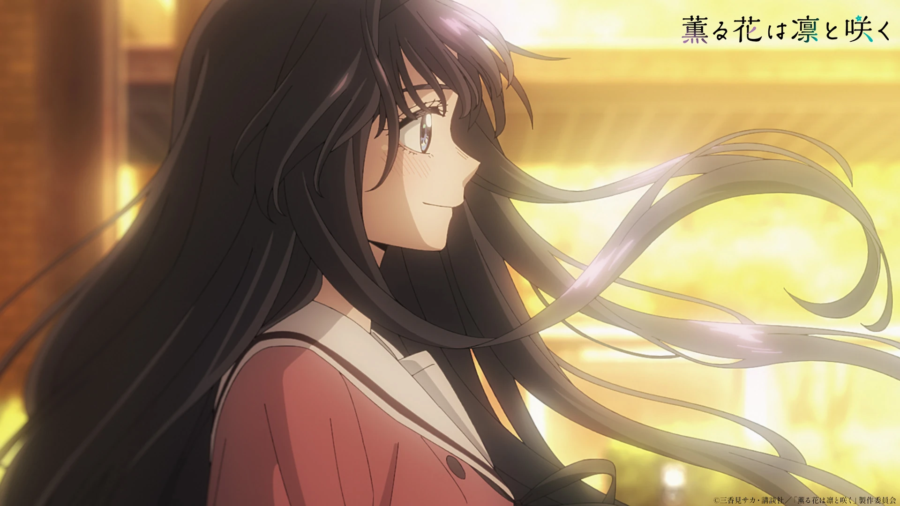

薫る花は凛と咲く · DIORAMA INTERAKTIF
和栗薫子
Kaoruko Waguri — dan bukit wisteria miliknya, di sebelah kananmu.
SCROLL ↓ — DIORAMA MENGORBIT
← bukitnya bisa diseret & lenteranya bisa diklik, beneran!CERITA
Lembut yang Tumbuh
Rambut bergelombang panjang. Senyum hangat yang menenangkan. Menilai orang dari ketulusannya — bukan dari penampilan.
Peran · Heroine utama
Sekolah · Akademi Kikyo
Sifat · Baik, manis, suka makan
Suara · Honoka Inoue
MAIN — 3D INTERAKTIF
Orbitkan Sesukamu
Scroll memutar kamera sinematik. Seret = orbit bebas. Klik lentera batu = senja ↔ fajar.
🏮 Lentera: menyala (senja)
GALERI
Stills Resmi
Tiga momen dari episode anime.



PENUTUP
薫る花は凛と咲く
Kelembutan bukan kelemahan. Ketulusan bukan kepolosan.
Sumber
- Gambar: Kaoru Hana Wiki (Fandom) · Profil: official
- 3D: Three.js r160 (di-vendor lokal) · diorama prosedural, WebGL real-time